Model Building#
Cory Clayton, Emily Lien, Prabhjot Singh#
import pandas as pd
import matplotlib.pyplot as plt
import tensorflow as tf
from tensorflow import keras
import numpy as np
from matplotlib import pyplot
import sklearn
import sklearn.preprocessing
from tensorflow.keras.layers import Dense, Activation, Flatten, Dropout, BatchNormalization
from tensorflow.keras.models import Sequential
from tensorflow.keras.layers import Dense
from tensorflow.keras.layers import LSTM
from datetime import datetime
from numpy import concatenate
import matplotlib as mpl
Data was cleaned in the data cleaning notebook. In Part 4 and 5, the cleaned csv was read in and various models were build. These models include:
LSTM
RNN
Deep LSTM
Deep RNN
Following this, in Part 6 the model were tuned. This section specifically focused on attemtpting to improve the model via the hyperparameters. Regularization tactics included the integration of dropout and batch normlalization.
#read in the data
hourly = pd.read_csv('wind_cleaned.csv',index_col='DATE')
---------------------------------------------------------------------------
FileNotFoundError Traceback (most recent call last)
<ipython-input-2-a2ed6767325b> in <module>
1 #read in the data
----> 2 hourly = pd.read_csv('wind_cleaned.csv',index_col='DATE')
~\anaconda3\lib\site-packages\pandas\io\parsers.py in read_csv(filepath_or_buffer, sep, delimiter, header, names, index_col, usecols, squeeze, prefix, mangle_dupe_cols, dtype, engine, converters, true_values, false_values, skipinitialspace, skiprows, skipfooter, nrows, na_values, keep_default_na, na_filter, verbose, skip_blank_lines, parse_dates, infer_datetime_format, keep_date_col, date_parser, dayfirst, cache_dates, iterator, chunksize, compression, thousands, decimal, lineterminator, quotechar, quoting, doublequote, escapechar, comment, encoding, dialect, error_bad_lines, warn_bad_lines, delim_whitespace, low_memory, memory_map, float_precision, storage_options)
608 kwds.update(kwds_defaults)
609
--> 610 return _read(filepath_or_buffer, kwds)
611
612
~\anaconda3\lib\site-packages\pandas\io\parsers.py in _read(filepath_or_buffer, kwds)
460
461 # Create the parser.
--> 462 parser = TextFileReader(filepath_or_buffer, **kwds)
463
464 if chunksize or iterator:
~\anaconda3\lib\site-packages\pandas\io\parsers.py in __init__(self, f, engine, **kwds)
817 self.options["has_index_names"] = kwds["has_index_names"]
818
--> 819 self._engine = self._make_engine(self.engine)
820
821 def close(self):
~\anaconda3\lib\site-packages\pandas\io\parsers.py in _make_engine(self, engine)
1048 )
1049 # error: Too many arguments for "ParserBase"
-> 1050 return mapping[engine](self.f, **self.options) # type: ignore[call-arg]
1051
1052 def _failover_to_python(self):
~\anaconda3\lib\site-packages\pandas\io\parsers.py in __init__(self, src, **kwds)
1865
1866 # open handles
-> 1867 self._open_handles(src, kwds)
1868 assert self.handles is not None
1869 for key in ("storage_options", "encoding", "memory_map", "compression"):
~\anaconda3\lib\site-packages\pandas\io\parsers.py in _open_handles(self, src, kwds)
1366 compression=kwds.get("compression", None),
1367 memory_map=kwds.get("memory_map", False),
-> 1368 storage_options=kwds.get("storage_options", None),
1369 )
1370
~\anaconda3\lib\site-packages\pandas\io\common.py in get_handle(path_or_buf, mode, encoding, compression, memory_map, is_text, errors, storage_options)
645 encoding=ioargs.encoding,
646 errors=errors,
--> 647 newline="",
648 )
649 else:
FileNotFoundError: [Errno 2] No such file or directory: 'wind_cleaned.csv'
split_fraction = 0.715 #train / validation split
train_split = int(split_fraction * int(hourly.shape[0]))
step = 1 #used if you want to skip hours
past = 120 #number of past hours to look at
future = 1 #how many hours in the future to predict
learning_rate = 0.001
batch_size = 32
epochs = 10
#normalize the data
def normalize(data, train_split):
data_mean = data[:train_split].mean(axis=0)
data_std = data[:train_split].std(axis=0)
return (data - data_mean) / data_std
hourly
| wnd_speed | temp_change | hourly_liq_depth_dim | liq_depth_dim | fan_speed | fan_speed2 | fan_speed3 | rh_air_temp | rel_humiditiy | min_hourly_air_temp | ... | min_solar_rad | max_solar_rad | std_solar_rad | surface_temp | std_surface_temp | ex_air_temp | ex_air_temp_2 | hourly_gust | wind_std | hour | |
|---|---|---|---|---|---|---|---|---|---|---|---|---|---|---|---|---|---|---|---|---|---|
| DATE | |||||||||||||||||||||
| 2020-01-01 00:00:00 | 23 | 75 | 0 | 0 | 816 | 959 | 1102 | 77 | 412 | 77 | ... | 0 | 0 | 0 | 81 | 3 | 89 | 75 | 47 | 65 | 0 |
| 2020-01-01 01:00:00 | 18 | 63 | 0 | 0 | 813 | 957 | 1099 | 64 | 438 | 63 | ... | 0 | 0 | 0 | 66 | 4 | 76 | 62 | 56 | 84 | 1 |
| 2020-01-01 02:00:00 | 20 | 59 | 0 | 0 | 811 | 955 | 1096 | 60 | 443 | 59 | ... | 0 | 0 | 0 | 57 | 2 | 63 | 58 | 54 | 87 | 2 |
| 2020-01-01 03:00:00 | 30 | 52 | 0 | 0 | 810 | 955 | 1093 | 53 | 483 | 53 | ... | 0 | 0 | 0 | 56 | 2 | 61 | 52 | 70 | 98 | 3 |
| 2020-01-01 04:00:00 | 24 | 49 | 0 | 0 | 808 | 953 | 1091 | 49 | 506 | 47 | ... | 0 | 0 | 0 | 47 | 2 | 54 | 46 | 56 | 94 | 4 |
| ... | ... | ... | ... | ... | ... | ... | ... | ... | ... | ... | ... | ... | ... | ... | ... | ... | ... | ... | ... | ... | ... |
| 2020-12-31 19:00:00 | 19 | 113 | 0 | 0 | 886 | 1019 | 1185 | 113 | 721 | 105 | ... | 1130 | 5483 | 794 | 130 | 8 | 114 | 105 | 34 | 54 | 19 |
| 2020-12-31 20:00:00 | 15 | 104 | 0 | 0 | 866 | 999 | 1160 | 105 | 714 | 105 | ... | 559 | 4638 | 913 | 140 | 13 | 118 | 104 | 37 | 62 | 20 |
| 2020-12-31 21:00:00 | 13 | 98 | 0 | 0 | 819 | 957 | 1102 | 98 | 724 | 98 | ... | 263 | 621 | 96 | 108 | 5 | 104 | 97 | 36 | 58 | 21 |
| 2020-12-31 22:00:00 | 12 | 93 | 0 | 0 | 812 | 950 | 1094 | 94 | 728 | 94 | ... | 0 | 507 | 186 | 99 | 4 | 98 | 93 | 32 | 55 | 22 |
| 2020-12-31 23:00:00 | 11 | 80 | 0 | 0 | 807 | 945 | 1088 | 82 | 693 | 82 | ... | 0 | 0 | 0 | 90 | 2 | 93 | 80 | 33 | 58 | 23 |
8784 rows × 31 columns
features = normalize(hourly.values, train_split) #extract the features normalized
features = pd.DataFrame(features)
features.head()
| 0 | 1 | 2 | 3 | 4 | 5 | 6 | 7 | 8 | 9 | ... | 21 | 22 | 23 | 24 | 25 | 26 | 27 | 28 | 29 | 30 | |
|---|---|---|---|---|---|---|---|---|---|---|---|---|---|---|---|---|---|---|---|---|---|
| 0 | 0.666842 | -0.889331 | -0.031372 | -0.025799 | -0.563459 | -0.404292 | -0.518017 | -0.876069 | -1.111618 | -0.819877 | ... | -0.544143 | -0.729012 | -0.61152 | -0.883275 | -0.388901 | -0.789128 | -0.484175 | 0.443108 | 0.183482 | -1.660325 |
| 1 | 0.107474 | -1.026942 | -0.031372 | -0.025799 | -0.655199 | -0.472108 | -0.592012 | -1.024685 | -0.990544 | -0.980986 | ... | -0.544143 | -0.729012 | -0.61152 | -1.034583 | -0.185799 | -0.937480 | -0.569980 | 0.922227 | 0.887507 | -1.515821 |
| 2 | 0.331221 | -1.072812 | -0.031372 | -0.025799 | -0.716359 | -0.539925 | -0.666008 | -1.070413 | -0.967260 | -1.027017 | ... | -0.544143 | -0.729012 | -0.61152 | -1.125368 | -0.592002 | -1.085833 | -0.596381 | 0.815756 | 0.998669 | -1.371317 |
| 3 | 1.449957 | -1.153085 | -0.031372 | -0.025799 | -0.746939 | -0.539925 | -0.740004 | -1.150437 | -0.780992 | -1.096063 | ... | -0.544143 | -0.729012 | -0.61152 | -1.135456 | -0.592002 | -1.108656 | -0.635983 | 1.667522 | 1.406263 | -1.226813 |
| 4 | 0.778715 | -1.187488 | -0.031372 | -0.025799 | -0.808098 | -0.607742 | -0.789334 | -1.196165 | -0.673888 | -1.165110 | ... | -0.544143 | -0.729012 | -0.61152 | -1.226240 | -0.592002 | -1.188538 | -0.675585 | 0.922227 | 1.258047 | -1.082309 |
5 rows × 31 columns
train_data = features.loc[0 : train_split - 1] #split the data
val_data = features.loc[train_split:]
start = past + future #set the start and end of the for looking to the future
end = start + train_split
x_train = train_data.values
y_train = features.iloc[start:end][[0]] #get the first column (wind) as response
sequence_length = int(past / step) #used if skipping hours
dataset_train = keras.preprocessing.timeseries_dataset_from_array(
x_train,
y_train,
sequence_length=sequence_length,
sampling_rate=step,
batch_size=batch_size,
) #set up a time series dataset
x_end = len(val_data) - past - future #accounting for previous data
label_start = train_split + past + future
x_val = val_data.iloc[:x_end].values
y_val = features.iloc[label_start:][[0]]
dataset_val = keras.preprocessing.timeseries_dataset_from_array(
x_val,
y_val,
sequence_length=sequence_length,
sampling_rate=step,
batch_size=batch_size,
) #validation data set
for batch in dataset_train.take(1):
inputs, targets = batch
print("Input shape:", inputs.numpy().shape)
print("Target shape:", targets.numpy().shape)
Input shape: (32, 120, 31)
Target shape: (32, 1)
y_val.shape
(2383, 1)
x_val.shape
(2383, 31)
Basic LSTM#
#simple model with 32 LSTM layers
inputs = keras.layers.Input(shape=(inputs.shape[1], inputs.shape[2]))
lstm_out = keras.layers.LSTM(64)(inputs)
outputs = keras.layers.Dense(1)(lstm_out)
#set the model
model = keras.Model(inputs=inputs, outputs=outputs)
model.compile(optimizer=keras.optimizers.Adam(learning_rate=learning_rate), loss="mse")
model.summary()
Model: "functional_1"
_________________________________________________________________
Layer (type) Output Shape Param #
=================================================================
input_1 (InputLayer) [(None, 120, 31)] 0
_________________________________________________________________
lstm (LSTM) (None, 64) 24576
_________________________________________________________________
dense (Dense) (None, 1) 65
=================================================================
Total params: 24,641
Trainable params: 24,641
Non-trainable params: 0
_________________________________________________________________
#set an early stopping callback
path_checkpoint = "model_checkpoint.h5"
es_callback = keras.callbacks.EarlyStopping(monitor="val_loss", min_delta=0, patience=5)
modelckpt_callback = keras.callbacks.ModelCheckpoint(
monitor="val_loss",
filepath=path_checkpoint,
verbose=1,
save_weights_only=True,
save_best_only=True,
)
#fit the model
history = model.fit(
dataset_train,
epochs=epochs,
validation_data=dataset_val,
callbacks=[es_callback, modelckpt_callback],
)
Epoch 1/10
193/193 [==============================] - ETA: 0s - loss: 0.6237
Epoch 00001: val_loss improved from inf to 0.64920, saving model to model_checkpoint.h5
193/193 [==============================] - 17s 89ms/step - loss: 0.6237 - val_loss: 0.6492
Epoch 2/10
193/193 [==============================] - ETA: 0s - loss: 0.4664
Epoch 00002: val_loss did not improve from 0.64920
193/193 [==============================] - 18s 96ms/step - loss: 0.4664 - val_loss: 0.7121
Epoch 3/10
193/193 [==============================] - ETA: 0s - loss: 0.4263
Epoch 00003: val_loss did not improve from 0.64920
193/193 [==============================] - 20s 101ms/step - loss: 0.4263 - val_loss: 0.7713
Epoch 4/10
193/193 [==============================] - ETA: 0s - loss: 0.4058
Epoch 00004: val_loss did not improve from 0.64920
193/193 [==============================] - 19s 98ms/step - loss: 0.4058 - val_loss: 0.7539
Epoch 5/10
193/193 [==============================] - ETA: 0s - loss: 0.3933
Epoch 00005: val_loss did not improve from 0.64920
193/193 [==============================] - 19s 98ms/step - loss: 0.3933 - val_loss: 0.7441
Epoch 6/10
193/193 [==============================] - ETA: 0s - loss: 0.3828- ETA
Epoch 00006: val_loss did not improve from 0.64920
193/193 [==============================] - 19s 100ms/step - loss: 0.3828 - val_loss: 0.7589
#visualize the loss over epochs
def visualize_loss(history, title):
loss = history.history["loss"]
val_loss = history.history["val_loss"]
epochs = range(len(loss))
plt.figure()
plt.plot(epochs, loss, "b", label="Training loss")
plt.plot(epochs, val_loss, "r", label="Validation loss")
plt.title(title)
plt.xlabel("Epochs")
plt.ylabel("Loss")
plt.legend()
plt.show()
visualize_loss(history, "Training and Validation Loss")
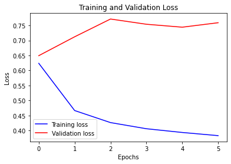
#function to visualize the predictions
def show_plot(plot_data, delta, title):
labels = ["History", "True Future", "Model Prediction"]
marker = [".-", "rx", "go"]
time_steps = list(range(-(plot_data[0].shape[0]), 0))
if delta:
future = delta
else:
future = 0
plt.title(title)
for i, val in enumerate(plot_data):
if i:
plt.plot(future, plot_data[i], marker[i], markersize=10, label=labels[i])
else:
plt.plot(time_steps, plot_data[i].flatten(), marker[i], label=labels[i])
plt.legend()
plt.xlim([time_steps[0], (future + 5) * 2])
plt.xlabel("Time-Step")
plt.show()
return
for x, y in dataset_val.take(5):
show_plot(
[x[0][:, 0].numpy(), y[0].numpy(), model.predict(x)[0]],
future,
"Single Step Prediction",
)
---------------------------------------------------------------------------
ValueError Traceback (most recent call last)
<ipython-input-48-3c4e33118dc5> in <module>
27 [x[0][:, 0].numpy(), y[0].numpy(), model.predict(x)[0]],
28 future,
---> 29 "Single Step Prediction",
30 )
<ipython-input-48-3c4e33118dc5> in show_plot(plot_data, delta, title)
13 for i, val in enumerate(plot_data):
14 if i:
---> 15 plt.plot(future, plot_data[i], marker[i], markersize=10, label=labels[i])
16 else:
17 plt.plot(time_steps, plot_data[i].flatten(), marker[i], label=labels[i])
~\anaconda3\lib\site-packages\matplotlib\pyplot.py in plot(scalex, scaley, data, *args, **kwargs)
2840 return gca().plot(
2841 *args, scalex=scalex, scaley=scaley,
-> 2842 **({"data": data} if data is not None else {}), **kwargs)
2843
2844
~\anaconda3\lib\site-packages\matplotlib\axes\_axes.py in plot(self, scalex, scaley, data, *args, **kwargs)
1741 """
1742 kwargs = cbook.normalize_kwargs(kwargs, mlines.Line2D)
-> 1743 lines = [*self._get_lines(*args, data=data, **kwargs)]
1744 for line in lines:
1745 self.add_line(line)
~\anaconda3\lib\site-packages\matplotlib\axes\_base.py in __call__(self, data, *args, **kwargs)
271 this += args[0],
272 args = args[1:]
--> 273 yield from self._plot_args(this, kwargs)
274
275 def get_next_color(self):
~\anaconda3\lib\site-packages\matplotlib\axes\_base.py in _plot_args(self, tup, kwargs)
397
398 if x.shape[0] != y.shape[0]:
--> 399 raise ValueError(f"x and y must have same first dimension, but "
400 f"have shapes {x.shape} and {y.shape}")
401 if x.ndim > 2 or y.ndim > 2:
ValueError: x and y must have same first dimension, but have shapes (1,) and (120, 10)
#A modification of the initial model
inputs = keras.layers.Input(shape=(inputs.shape[1], inputs.shape[2]))
lstm_out = keras.layers.LSTM(60)(inputs)
outputs = keras.layers.Dense(1)(lstm_out)
#set the model
model2 = keras.Model(inputs=inputs, outputs=outputs)
model2.compile(optimizer=keras.optimizers.Adam(learning_rate=learning_rate), loss="mse")
model2.summary()
Model: "functional_3"
_________________________________________________________________
Layer (type) Output Shape Param #
=================================================================
input_2 (InputLayer) [(None, 120, 31)] 0
_________________________________________________________________
lstm_1 (LSTM) (None, 60) 22080
_________________________________________________________________
dense_1 (Dense) (None, 1) 61
=================================================================
Total params: 22,141
Trainable params: 22,141
Non-trainable params: 0
_________________________________________________________________
#set an early stopping callback
path_checkpoint = "model_checkpoint.h5"
es_callback = keras.callbacks.EarlyStopping(monitor="val_loss", min_delta=0, patience=5)
modelckpt_callback = keras.callbacks.ModelCheckpoint(
monitor="val_loss",
filepath=path_checkpoint,
verbose=1,
save_weights_only=True,
save_best_only=True,
)
#fit the model
history = model2.fit(
dataset_train,
epochs=epochs,
validation_data=dataset_val,
callbacks=[es_callback, modelckpt_callback],
)
Epoch 1/10
193/193 [==============================] - ETA: 0s - loss: 0.6392
Epoch 00001: val_loss improved from inf to 0.55618, saving model to model_checkpoint.h5
193/193 [==============================] - 8s 44ms/step - loss: 0.6392 - val_loss: 0.5562
Epoch 2/10
192/193 [============================>.] - ETA: 0s - loss: 0.4850
Epoch 00002: val_loss improved from 0.55618 to 0.54816, saving model to model_checkpoint.h5
193/193 [==============================] - 9s 47ms/step - loss: 0.4839 - val_loss: 0.5482
Epoch 3/10
193/193 [==============================] - ETA: 0s - loss: 0.4363
Epoch 00003: val_loss improved from 0.54816 to 0.54663, saving model to model_checkpoint.h5
193/193 [==============================] - 10s 53ms/step - loss: 0.4363 - val_loss: 0.5466
Epoch 4/10
193/193 [==============================] - ETA: 0s - loss: 0.4133
Epoch 00004: val_loss improved from 0.54663 to 0.53404, saving model to model_checkpoint.h5
193/193 [==============================] - 11s 56ms/step - loss: 0.4133 - val_loss: 0.5340
Epoch 5/10
193/193 [==============================] - ETA: 0s - loss: 0.3989
Epoch 00005: val_loss improved from 0.53404 to 0.52225, saving model to model_checkpoint.h5
193/193 [==============================] - 10s 51ms/step - loss: 0.3989 - val_loss: 0.5223
Epoch 6/10
193/193 [==============================] - ETA: 0s - loss: 0.3879
Epoch 00006: val_loss did not improve from 0.52225
193/193 [==============================] - 11s 56ms/step - loss: 0.3879 - val_loss: 0.5585
Epoch 7/10
193/193 [==============================] - ETA: 0s - loss: 0.3776
Epoch 00007: val_loss did not improve from 0.52225
193/193 [==============================] - 11s 56ms/step - loss: 0.3776 - val_loss: 0.5794
Epoch 8/10
193/193 [==============================] - ETA: 0s - loss: 0.3664
Epoch 00008: val_loss did not improve from 0.52225
193/193 [==============================] - 11s 57ms/step - loss: 0.3664 - val_loss: 0.5991
Epoch 9/10
192/193 [============================>.] - ETA: 0s - loss: 0.3562
Epoch 00009: val_loss did not improve from 0.52225
193/193 [==============================] - 11s 59ms/step - loss: 0.3555 - val_loss: 0.5925
Epoch 10/10
192/193 [============================>.] - ETA: 0s - loss: 0.3451
Epoch 00010: val_loss did not improve from 0.52225
193/193 [==============================] - 11s 56ms/step - loss: 0.3444 - val_loss: 0.5794
#visualize the loss over epochs
def visualize_loss(history, title):
loss = history.history["loss"]
val_loss = history.history["val_loss"]
epochs = range(len(loss))
plt.figure()
plt.plot(epochs, loss, "b", label="Training loss")
plt.plot(epochs, val_loss, "r", label="Validation loss")
plt.title(title)
plt.xlabel("Epochs")
plt.ylabel("Loss")
plt.legend()
plt.show()
visualize_loss(history, "Training and Validation Loss")
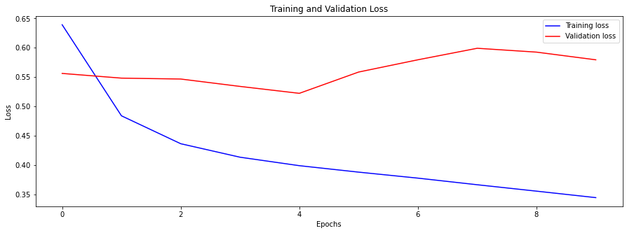
#function to visualize the predictions
def show_plot(plot_data, delta, title):
labels = ["History", "True Future", "Model Prediction"]
marker = [".-", "rx", "go"]
time_steps = list(range(-(plot_data[0].shape[0]), 0))
if delta:
future = delta
else:
future = 0
plt.title(title)
for i, val in enumerate(plot_data):
if i:
plt.plot(future, plot_data[i], marker[i], markersize=10, label=labels[i])
else:
plt.plot(time_steps, plot_data[i].flatten(), marker[i], label=labels[i])
plt.legend()
plt.xlim([time_steps[0], (future + 5) * 2])
plt.xlabel("Time-Step")
plt.show()
return
for x, y in dataset_val.take(5):
show_plot(
[x[0][:, 0].numpy(), y[0].numpy(), model2.predict(x)[0]],
future,
"Single Step Prediction",
)
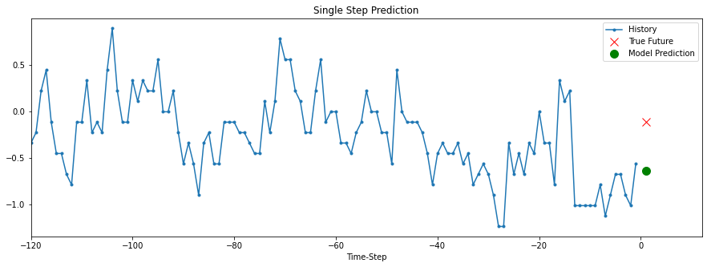
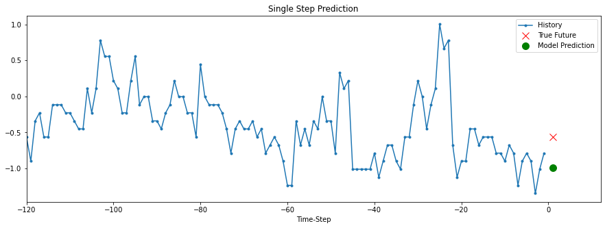
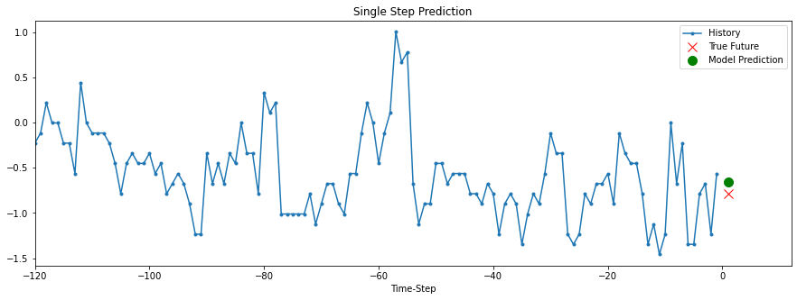
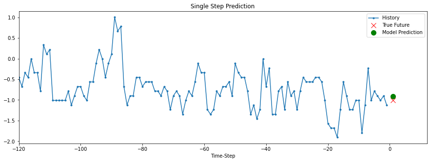
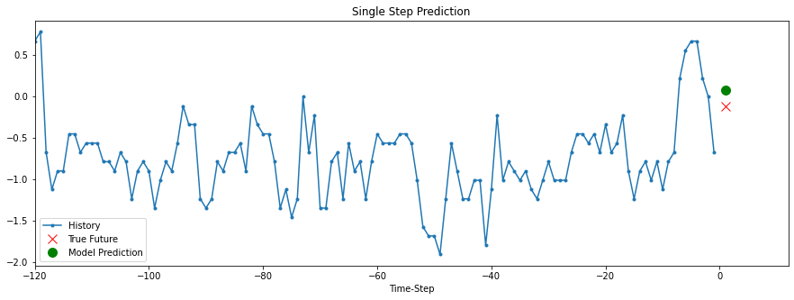
Deep LSTM 1 – Recreating based on Another Approach#
#Recreating the model from https://github.com/balandhanka/Windspeed-Forecasting-LSTM-GRU/blob/master/final_lstm.ipynb
def create_ts_data(dataset, lookback=1, predicted_col=3):
temp=dataset.copy()
temp["id"]= range(1, len(temp)+1)
temp = temp.iloc[:-lookback, :]
temp.set_index('id', inplace =True)
predicted_value=dataset.copy()
predicted_value = predicted_value.iloc[lookback:,predicted_col]
predicted_value.columns=["Predcited"]
predicted_value= pd.DataFrame(predicted_value)
predicted_value["id"]= range(1, len(predicted_value)+1)
predicted_value.set_index('id', inplace =True)
final_df= pd.concat([temp, predicted_value], axis=1)
#final_df.columns = ['var1(t-1)', 'var2(t-1)', 'var3(t-1)', 'var4(t-1)', 'var5(t-1)', 'var6(t-1)', 'var7(t-1)', 'var8(t-1)','var1(t)']
#final_df.set_index('Date', inplace=True)
return final_df
#We now create the time series dataset with looking back one time step
reframed_df= create_ts_data(features, 1,3)
reframed_df.fillna(0, inplace=True)
reframed_df.columns = ['var1(t-1)', 'var2(t-1)', 'var3(t-1)', 'var4(t-1)', 'var5(t-1)','var6(t-1)','var7(t-1)','var8(t-1)',
'var9(t-1)','var10(t-1)','var11(t-1)','var12(t-1)','var13(t-1)','var14(t-1)','var15(t-1)','var16(t-1)',
'var17(t-1)','var18(t-1)','var19(t-1)','var20(t-1)','var21(t-1)','var22(t-1)','var23(t-1)','var24(t-1)',
'var25(t-1)','var26(t-1)','var27(t-1)','var28(t-1)','var29(t-1)','var30(t-1)','var31(t-1)','var32(t-1)']
print(reframed_df.head(4))
var1(t-1) var2(t-1) var3(t-1) var4(t-1) var5(t-1) var6(t-1) \
id
1 0.666842 -0.889331 -0.031372 -0.025799 -0.563459 -0.404292
2 0.107474 -1.026942 -0.031372 -0.025799 -0.655199 -0.472108
3 0.331221 -1.072812 -0.031372 -0.025799 -0.716359 -0.539925
4 1.449957 -1.153085 -0.031372 -0.025799 -0.746939 -0.539925
var7(t-1) var8(t-1) var9(t-1) var10(t-1) ... var23(t-1) var24(t-1) \
id ...
1 -0.518017 -0.876069 -1.111618 -0.819877 ... -0.729012 -0.61152
2 -0.592012 -1.024685 -0.990544 -0.980986 ... -0.729012 -0.61152
3 -0.666008 -1.070413 -0.967260 -1.027017 ... -0.729012 -0.61152
4 -0.740004 -1.150437 -0.780992 -1.096063 ... -0.729012 -0.61152
var25(t-1) var26(t-1) var27(t-1) var28(t-1) var29(t-1) var30(t-1) \
id
1 -0.883275 -0.388901 -0.789128 -0.484175 0.443108 0.183482
2 -1.034583 -0.185799 -0.937480 -0.569980 0.922227 0.887507
3 -1.125368 -0.592002 -1.085833 -0.596381 0.815756 0.998669
4 -1.135456 -0.592002 -1.108656 -0.635983 1.667522 1.406263
var31(t-1) var32(t-1)
id
1 -1.660325 -0.025799
2 -1.515821 -0.025799
3 -1.371317 -0.025799
4 -1.226813 -0.025799
[4 rows x 32 columns]
# split into train and test sets
values = reframed_df.values
training_sample =int( len(hourly) *0.7)
train = values[:training_sample, :]
test = values[training_sample:, :]
# split into input and outputs
train_X, train_y = train[:, :-1], train[:, -1]
test_X, test_y = test[:, :-1], test[:, -1]
# reshape input to be 3D [samples, time steps, features]
train_X = train_X.reshape((train_X.shape[0], 1, train_X.shape[1]))
test_X = test_X.reshape((test_X.shape[0], 1, test_X.shape[1]))
print(train_X.shape, train_y.shape, test_X.shape, test_y.shape)
(6148, 1, 31) (6148,) (2635, 1, 31) (2635,)
model_lstm = Sequential()
model_lstm.add(LSTM(75, return_sequences=True,input_shape=(train_X.shape[1], train_X.shape[2])))
model_lstm.add(LSTM(units=30, return_sequences=True))
model_lstm.add(LSTM(units=30))
model_lstm.add(Dense(units=1))
model_lstm.compile(loss='mse', optimizer='adam')
model_lstm.summary()
Model: "sequential_14"
_________________________________________________________________
Layer (type) Output Shape Param #
=================================================================
lstm_25 (LSTM) (None, 1, 75) 32100
_________________________________________________________________
lstm_26 (LSTM) (None, 1, 30) 12720
_________________________________________________________________
lstm_27 (LSTM) (None, 30) 7320
_________________________________________________________________
dense_5 (Dense) (None, 1) 31
=================================================================
Total params: 52,171
Trainable params: 52,171
Non-trainable params: 0
_________________________________________________________________
model_lstm.compile(loss='mse', optimizer='adam')
lstm_history = model_lstm.fit(train_X, train_y, epochs=10,validation_data=(test_X, test_y), batch_size=64, shuffle=False)
Epoch 1/10
97/97 [==============================] - 2s 17ms/step - loss: 1.0219 - val_loss: 4.9989e-04
Epoch 2/10
97/97 [==============================] - 0s 4ms/step - loss: 1.0187 - val_loss: 2.6031e-04
Epoch 3/10
97/97 [==============================] - 0s 4ms/step - loss: 1.0103 - val_loss: 6.2905e-04
Epoch 4/10
97/97 [==============================] - 0s 4ms/step - loss: 0.9849 - val_loss: 0.0016
Epoch 5/10
97/97 [==============================] - 0s 4ms/step - loss: 0.9281 - val_loss: 0.0027
Epoch 6/10
97/97 [==============================] - 0s 4ms/step - loss: 0.8564 - val_loss: 0.0021
Epoch 7/10
97/97 [==============================] - 0s 4ms/step - loss: 0.7974 - val_loss: 0.0013
Epoch 8/10
97/97 [==============================] - 0s 4ms/step - loss: 0.7554 - val_loss: 0.0011
Epoch 9/10
97/97 [==============================] - 0s 4ms/step - loss: 0.7251 - val_loss: 9.2207e-04
Epoch 10/10
97/97 [==============================] - 0s 4ms/step - loss: 0.7006 - val_loss: 0.0014
pred_y = model_lstm.evaluate(test_X)
1/83 [..............................] - ETA: 0s - loss: 0.0000e+00WARNING:tensorflow:Callbacks method `on_test_batch_end` is slow compared to the batch time (batch time: 0.0000s vs `on_test_batch_end` time: 0.0010s). Check your callbacks.
83/83 [==============================] - 0s 719us/step - loss: 0.0000e+00
pyplot.plot(lstm_history.history['loss'], label='lstm train', color='brown')
pyplot.plot(lstm_history.history['val_loss'], label='lstm test', color='blue')
pyplot.legend()
pyplot.show()
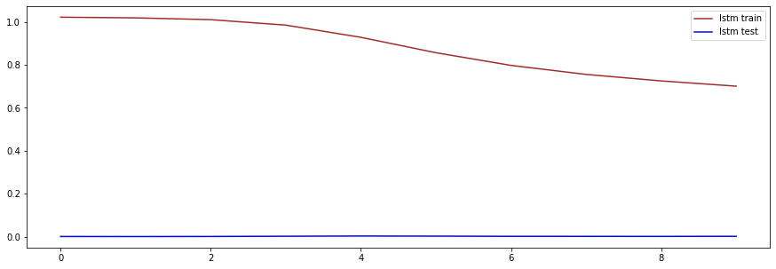
test_y.reshape(2635,1)
array([[-0.02579926],
[-0.02579926],
[-0.02579926],
...,
[-0.02579926],
[-0.02579926],
[-0.02579926]])
pred_y
array([[-0.02612374],
[-0.02612132],
[-0.02614242],
...,
[-0.02588367],
[-0.02588575],
[-0.02593128]], dtype=float32)
import matplotlib.pyplot as plt
plt.rcParams['figure.figsize'] = (15,5)
from sklearn.metrics import *
from math import sqrt
MSE = mean_squared_error(test_y, pred_y)
R2 = r2_score(test_y, pred_y)
RMSE = sqrt(mean_squared_error(test_y, pred_y))
MAE = mean_absolute_error(test_y, pred_y)
print(MSE)
print(R2)
print(RMSE)
print(MAE)
#plotting predicted test value vs actual test value
plt.plot(test_y, label = 'Actual')
plt.plot(pred_y, label = 'Predicted')
plt.legend()
plt.show()
2.094107541057569e-05
-0.02965799524279844
0.004576141978848087
0.0009094030408406897
#Recreating some of the RNNs from the M7_3 tutorial
y_pred = x_val[:, -1]
np.mean(keras.losses.mean_squared_error(y_val, y_pred))
1.8505681231851796
Basic RNN#
#Back to basics. Let's try a simple RNN
np.random.seed(42)
tf.random.set_seed(42)
modelR = keras.models.Sequential([
keras.layers.SimpleRNN(1)
])
optimizer = keras.optimizers.Adam(lr=0.005)
modelR.compile(loss="mse", optimizer=optimizer)
historyR = modelR.fit(dataset_train, epochs=20,
validation_data=dataset_val)
Epoch 1/20
193/193 [==============================] - 2s 10ms/step - loss: 0.9972 - val_loss: 0.6643
Epoch 2/20
193/193 [==============================] - 2s 9ms/step - loss: 0.7330 - val_loss: 0.5941
Epoch 3/20
193/193 [==============================] - 2s 9ms/step - loss: 0.6806 - val_loss: 0.5828
Epoch 4/20
193/193 [==============================] - 2s 9ms/step - loss: 0.6689 - val_loss: 0.5802
Epoch 5/20
193/193 [==============================] - 2s 9ms/step - loss: 0.6650 - val_loss: 0.5790
Epoch 6/20
193/193 [==============================] - 2s 9ms/step - loss: 0.6630 - val_loss: 0.5784
Epoch 7/20
193/193 [==============================] - 2s 9ms/step - loss: 0.6619 - val_loss: 0.5780
Epoch 8/20
193/193 [==============================] - 2s 9ms/step - loss: 0.6611 - val_loss: 0.5779
Epoch 9/20
193/193 [==============================] - 2s 9ms/step - loss: 0.6607 - val_loss: 0.5780
Epoch 10/20
193/193 [==============================] - 2s 9ms/step - loss: 0.6605 - val_loss: 0.5781
Epoch 11/20
193/193 [==============================] - 2s 9ms/step - loss: 0.6603 - val_loss: 0.5782
Epoch 12/20
193/193 [==============================] - 2s 9ms/step - loss: 0.6603 - val_loss: 0.5784
Epoch 13/20
193/193 [==============================] - 2s 9ms/step - loss: 0.6602 - val_loss: 0.5786
Epoch 14/20
193/193 [==============================] - 2s 9ms/step - loss: 0.6602 - val_loss: 0.5788
Epoch 15/20
193/193 [==============================] - 2s 9ms/step - loss: 0.6602 - val_loss: 0.5789
Epoch 16/20
193/193 [==============================] - 2s 9ms/step - loss: 0.6602 - val_loss: 0.5791
Epoch 17/20
193/193 [==============================] - 2s 9ms/step - loss: 0.6602 - val_loss: 0.5793
Epoch 18/20
193/193 [==============================] - 2s 9ms/step - loss: 0.6602 - val_loss: 0.5794
Epoch 19/20
193/193 [==============================] - 2s 9ms/step - loss: 0.6602 - val_loss: 0.5796
Epoch 20/20
193/193 [==============================] - 2s 9ms/step - loss: 0.6602 - val_loss: 0.5797
modelR.evaluate(dataset_val)
71/71 [==============================] - 0s 4ms/step - loss: 0.5797
0.5797474384307861
def visualize_loss(history, title):
loss = history.history["loss"]
val_loss = history.history["val_loss"]
epochs = range(len(loss))
plt.figure()
plt.plot(epochs, loss, "b", label="Training loss")
plt.plot(epochs, val_loss, "r", label="Validation loss")
plt.title(title)
plt.xlabel("Epochs")
plt.ylabel("Loss")
plt.legend()
plt.show()
visualize_loss(historyR, "Training and Validation Loss")
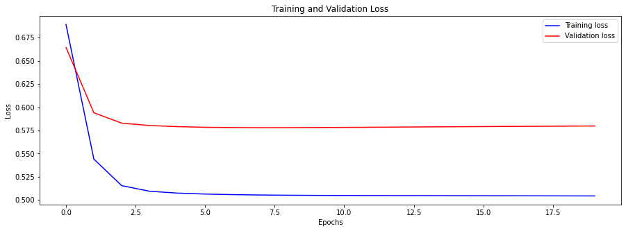
Deep RNN#
#Let's try a deep rnn
np.random.seed(42)
tf.random.set_seed(42)
modelDR = keras.models.Sequential([
keras.layers.SimpleRNN(20, return_sequences=True),
keras.layers.SimpleRNN(20, return_sequences=True),
keras.layers.SimpleRNN(1)
])
modelDR.compile(loss="mse", optimizer="adam")
historyDR = modelDR.fit(dataset_train, epochs=20,
validation_data=dataset_val)
Epoch 1/20
WARNING:tensorflow:Layer simple_rnn is casting an input tensor from dtype float64 to the layer's dtype of float32, which is new behavior in TensorFlow 2. The layer has dtype float32 because its dtype defaults to floatx.
If you intended to run this layer in float32, you can safely ignore this warning. If in doubt, this warning is likely only an issue if you are porting a TensorFlow 1.X model to TensorFlow 2.
To change all layers to have dtype float64 by default, call `tf.keras.backend.set_floatx('float64')`. To change just this layer, pass dtype='float64' to the layer constructor. If you are the author of this layer, you can disable autocasting by passing autocast=False to the base Layer constructor.
193/193 [==============================] - 8s 43ms/step - loss: 0.8834 - val_loss: 0.7232
Epoch 2/20
193/193 [==============================] - 9s 46ms/step - loss: 0.6431 - val_loss: 0.5462
Epoch 3/20
193/193 [==============================] - 10s 53ms/step - loss: 0.5728 - val_loss: 0.5850
Epoch 4/20
193/193 [==============================] - 10s 52ms/step - loss: 0.5416 - val_loss: 0.5614
Epoch 5/20
193/193 [==============================] - 10s 52ms/step - loss: 0.5245 - val_loss: 0.5483
Epoch 6/20
193/193 [==============================] - 11s 56ms/step - loss: 0.5138 - val_loss: 0.5402
Epoch 7/20
193/193 [==============================] - 11s 57ms/step - loss: 0.5064 - val_loss: 0.5346
Epoch 8/20
193/193 [==============================] - 15s 76ms/step - loss: 0.5006 - val_loss: 0.5308
Epoch 9/20
193/193 [==============================] - 14s 73ms/step - loss: 0.4960 - val_loss: 0.5274
Epoch 10/20
193/193 [==============================] - 13s 67ms/step - loss: 0.4921 - val_loss: 0.5242
Epoch 11/20
193/193 [==============================] - 13s 70ms/step - loss: 0.4887 - val_loss: 0.5213
Epoch 12/20
193/193 [==============================] - 14s 71ms/step - loss: 0.4855 - val_loss: 0.5182
Epoch 13/20
193/193 [==============================] - 13s 66ms/step - loss: 0.4826 - val_loss: 0.5150
Epoch 14/20
193/193 [==============================] - 13s 68ms/step - loss: 0.4799 - val_loss: 0.5113
Epoch 15/20
193/193 [==============================] - 13s 67ms/step - loss: 0.4772 - val_loss: 0.5071
Epoch 16/20
193/193 [==============================] - 13s 67ms/step - loss: 0.4746 - val_loss: 0.5025
Epoch 17/20
193/193 [==============================] - 13s 67ms/step - loss: 0.4720 - val_loss: 0.4980
Epoch 18/20
193/193 [==============================] - 13s 66ms/step - loss: 0.4693 - val_loss: 0.5429
Epoch 19/20
193/193 [==============================] - 13s 67ms/step - loss: 0.4665 - val_loss: 0.5408
Epoch 20/20
193/193 [==============================] - 13s 68ms/step - loss: 0.4637 - val_loss: 0.5386
modelDR.evaluate(dataset_val)
---------------------------------------------------------------------------
NameError Traceback (most recent call last)
<ipython-input-39-fa59d3e96c28> in <module>
----> 1 modelDR.evaluate(dataset_val)
NameError: name 'modelDR' is not defined
def visualize_loss(history, title):
loss = history.history["loss"]
val_loss = history.history["val_loss"]
epochs = range(len(loss))
plt.figure()
plt.plot(epochs, loss, "b", label="Training loss")
plt.plot(epochs, val_loss, "r", label="Validation loss")
plt.title(title)
plt.xlabel("Epochs")
plt.ylabel("Loss")
plt.legend()
plt.show()
visualize_loss(historyDR, "Training and Validation Loss")
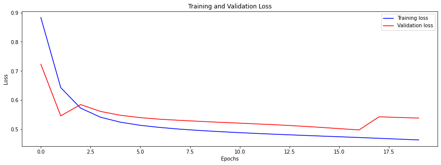
Deep LSTM#
#The deep rnn structure but with LSTM
np.random.seed(42)
tf.random.set_seed(42)
modelLSTM = keras.models.Sequential([
keras.layers.LSTM(20, return_sequences=True),
keras.layers.LSTM(20, return_sequences=True),
keras.layers.LSTM(1)
])
modelLSTM.compile(loss="mse", optimizer="adam")
historyLSTM = modelLSTM.fit(dataset_train, epochs=20,
validation_data=dataset_val)
Epoch 1/20
WARNING:tensorflow:Layer lstm_7 is casting an input tensor from dtype float64 to the layer's dtype of float32, which is new behavior in TensorFlow 2. The layer has dtype float32 because its dtype defaults to floatx.
If you intended to run this layer in float32, you can safely ignore this warning. If in doubt, this warning is likely only an issue if you are porting a TensorFlow 1.X model to TensorFlow 2.
To change all layers to have dtype float64 by default, call `tf.keras.backend.set_floatx('float64')`. To change just this layer, pass dtype='float64' to the layer constructor. If you are the author of this layer, you can disable autocasting by passing autocast=False to the base Layer constructor.
193/193 [==============================] - 33s 172ms/step - loss: 0.8539 - val_loss: 0.7600
Epoch 2/20
193/193 [==============================] - 33s 169ms/step - loss: 0.7752 - val_loss: 0.7454
Epoch 3/20
193/193 [==============================] - 26s 134ms/step - loss: 0.7259 - val_loss: 0.7301
Epoch 4/20
193/193 [==============================] - 24s 125ms/step - loss: 0.6807 - val_loss: 0.7148
Epoch 5/20
193/193 [==============================] - 29s 153ms/step - loss: 0.6473 - val_loss: 0.7146
Epoch 6/20
193/193 [==============================] - 28s 145ms/step - loss: 0.6170 - val_loss: 0.7208
Epoch 7/20
193/193 [==============================] - 24s 124ms/step - loss: 0.5947 - val_loss: 0.7076
Epoch 8/20
193/193 [==============================] - 28s 147ms/step - loss: 0.5761 - val_loss: 0.6830
Epoch 9/20
193/193 [==============================] - 28s 146ms/step - loss: 0.5582 - val_loss: 0.6890
Epoch 10/20
193/193 [==============================] - 29s 153ms/step - loss: 0.5432 - val_loss: 0.6778
Epoch 11/20
193/193 [==============================] - 29s 151ms/step - loss: 0.5307 - val_loss: 0.6733
Epoch 12/20
193/193 [==============================] - 28s 143ms/step - loss: 0.5164 - val_loss: 0.6748
Epoch 13/20
193/193 [==============================] - 28s 143ms/step - loss: 0.5058 - val_loss: 0.6853
Epoch 14/20
193/193 [==============================] - 28s 146ms/step - loss: 0.4945 - val_loss: 0.7018
Epoch 15/20
193/193 [==============================] - 25s 129ms/step - loss: 0.4876 - val_loss: 0.6998
Epoch 16/20
193/193 [==============================] - 22s 113ms/step - loss: 0.4863 - val_loss: 0.6809
Epoch 17/20
193/193 [==============================] - 22s 113ms/step - loss: 0.4849 - val_loss: 0.6678
Epoch 18/20
193/193 [==============================] - 22s 115ms/step - loss: 0.4679 - val_loss: 0.7017
Epoch 19/20
193/193 [==============================] - 22s 115ms/step - loss: 0.4641 - val_loss: 0.6652
Epoch 20/20
193/193 [==============================] - 22s 112ms/step - loss: 0.4687 - val_loss: 0.6624
modelLSTM.evaluate(dataset_val)
def visualize_loss(history, title):
loss = history.history["loss"]
val_loss = history.history["val_loss"]
epochs = range(len(loss))
plt.figure()
plt.plot(epochs, loss, "b", label="Training loss")
plt.plot(epochs, val_loss, "r", label="Validation loss")
plt.title(title)
plt.xlabel("Epochs")
plt.ylabel("Loss")
plt.legend()
plt.show()
visualize_loss(historyLSTM, "Training and Validation Loss")
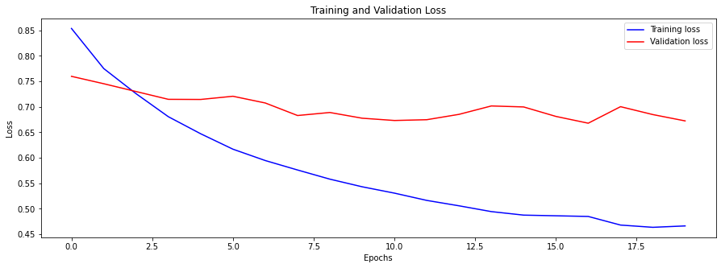
Model Tuning#
Regularization#
Deep RNN Based off Other Code#
#The deep rnn structure but with LSTM
np.random.seed(42)
tf.random.set_seed(42)
modelLSTM_2 = keras.models.Sequential([
keras.layers.LSTM(20, return_sequences=True),
keras.layers.BatchNormalization(),
keras.layers.LSTM(20, return_sequences=True),
keras.layers.BatchNormalization(),
keras.layers.LSTM(1)])
modelLSTM_2.compile(loss="mse", optimizer="adam")
historyLSTM_2 = modelLSTM_2.fit(dataset_train, epochs=20,
validation_data=dataset_val)
Epoch 1/20
WARNING:tensorflow:Layer lstm_12 is casting an input tensor from dtype float64 to the layer's dtype of float32, which is new behavior in TensorFlow 2. The layer has dtype float32 because its dtype defaults to floatx.
If you intended to run this layer in float32, you can safely ignore this warning. If in doubt, this warning is likely only an issue if you are porting a TensorFlow 1.X model to TensorFlow 2.
To change all layers to have dtype float64 by default, call `tf.keras.backend.set_floatx('float64')`. To change just this layer, pass dtype='float64' to the layer constructor. If you are the author of this layer, you can disable autocasting by passing autocast=False to the base Layer constructor.
193/193 [==============================] - 19s 100ms/step - loss: 0.9249 - val_loss: 0.7940
Epoch 2/20
193/193 [==============================] - 22s 114ms/step - loss: 0.7903 - val_loss: 0.7312
Epoch 3/20
193/193 [==============================] - 22s 115ms/step - loss: 0.7181 - val_loss: 0.7449
Epoch 4/20
193/193 [==============================] - 22s 116ms/step - loss: 0.6540 - val_loss: 0.6987
Epoch 5/20
193/193 [==============================] - 22s 114ms/step - loss: 0.6211 - val_loss: 0.7422
Epoch 6/20
193/193 [==============================] - 23s 121ms/step - loss: 0.5888 - val_loss: 0.6833
Epoch 7/20
193/193 [==============================] - 23s 120ms/step - loss: 0.5643 - val_loss: 0.7199
Epoch 8/20
193/193 [==============================] - 22s 115ms/step - loss: 0.5464 - val_loss: 0.8787
Epoch 9/20
193/193 [==============================] - 22s 114ms/step - loss: 0.5341 - val_loss: 0.9211
Epoch 10/20
193/193 [==============================] - 22s 116ms/step - loss: 0.5207 - val_loss: 0.8851
Epoch 11/20
193/193 [==============================] - 23s 118ms/step - loss: 0.5114 - val_loss: 0.8952
Epoch 12/20
193/193 [==============================] - 23s 117ms/step - loss: 0.5034 - val_loss: 0.9522
Epoch 13/20
193/193 [==============================] - 24s 125ms/step - loss: 0.4967 - val_loss: 0.8014
Epoch 14/20
193/193 [==============================] - 25s 130ms/step - loss: 0.5554 - val_loss: 0.7374
Epoch 15/20
193/193 [==============================] - 23s 121ms/step - loss: 0.5421 - val_loss: 0.6664
Epoch 16/20
193/193 [==============================] - 24s 124ms/step - loss: 0.4926 - val_loss: 0.6759
Epoch 17/20
193/193 [==============================] - 24s 123ms/step - loss: 0.4706 - val_loss: 0.7202
Epoch 18/20
193/193 [==============================] - 23s 120ms/step - loss: 0.4580 - val_loss: 0.7475
Epoch 19/20
193/193 [==============================] - 22s 117ms/step - loss: 0.4517 - val_loss: 0.7358
Epoch 20/20
193/193 [==============================] - 23s 118ms/step - loss: 0.4505 - val_loss: 0.7416
modelLSTM_2.evaluate(dataset_val)
71/71 [==============================] - 1s 19ms/step - loss: 0.7416
0.741614043712616
def visualize_loss(history, title):
loss = history.history["loss"]
val_loss = history.history["val_loss"]
epochs = range(len(loss))
plt.figure()
plt.plot(epochs, loss, "b", label="Training loss")
plt.plot(epochs, val_loss, "r", label="Validation loss")
plt.title(title)
plt.xlabel("Epochs")
plt.ylabel("Loss")
plt.legend()
plt.show()
visualize_loss(historyLSTM_2, "Training and Validation Loss")
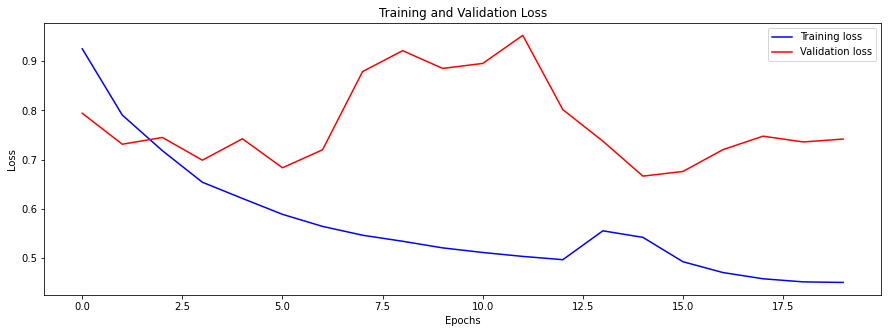
Other Deep LSTM#
model_lstm = Sequential()
model_lstm.add(LSTM(75, return_sequences=True,input_shape=(train_X.shape[1], train_X.shape[2])))
model_lstm.add(LSTM(units=30, return_sequences=True))
model_lstm.add(BatchNormalization())
model_lstm.add(LSTM(units=30))
model_lstm.add(Dense(units=1))
model_lstm.compile(loss='mse', optimizer='adam')
lstm_history = model_lstm.fit(train_X, train_y, epochs=10,validation_data=(test_X, test_y), batch_size=64, shuffle=False)
Epoch 1/10
97/97 [==============================] - 1s 12ms/step - loss: 1.0336 - val_loss: 6.3848e-04
Epoch 2/10
97/97 [==============================] - 1s 6ms/step - loss: 1.0107 - val_loss: 9.0753e-04
Epoch 3/10
97/97 [==============================] - 0s 5ms/step - loss: 0.9905 - val_loss: 6.5714e-04
Epoch 4/10
97/97 [==============================] - 0s 4ms/step - loss: 0.9637 - val_loss: 6.2440e-04
Epoch 5/10
97/97 [==============================] - 0s 4ms/step - loss: 0.9269 - val_loss: 0.0011
Epoch 6/10
97/97 [==============================] - 0s 4ms/step - loss: 0.8977 - val_loss: 0.0013
Epoch 7/10
97/97 [==============================] - 0s 4ms/step - loss: 0.8754 - val_loss: 0.0035
Epoch 8/10
97/97 [==============================] - 0s 4ms/step - loss: 0.8574 - val_loss: 0.0146
Epoch 9/10
97/97 [==============================] - 0s 4ms/step - loss: 0.8357 - val_loss: 0.0089
Epoch 10/10
97/97 [==============================] - 0s 4ms/step - loss: 0.8202 - val_loss: 0.0132
WaveNet Implementation#
np.random.seed(42)
tf.random.set_seed(42)
# # mse only at the last time step -- found in textbook 511
# def last_time_step_mse(Y_true, Y_pred):
# return keras.metrics.mean_squared_error(Y_true[:-1], Y_pred[:,-1])
# found from pg 522 of textbook
model = Sequential()
model.add(keras.layers.InputLayer(input_shape=[None, 1]))
for rate in (1,2,4,8)*2:
model.add(keras.layers.Conv1D(filters=20, kernel_size=2, padding="causal",
activation="relu", dilation_rate=rate))
model.add(keras.layers.Conv1D(filters=10, kernel_size=1))
# # model compiling
# model.compile(loss="mse", optimizer="adam")
# history = model.fit(dataset_train, epochs=20,
# validation_data=dataset_val)
This model didn’t really work.
## Transformers with Time Series Dat